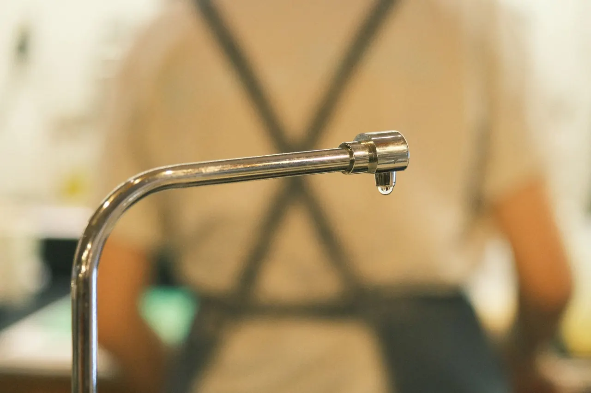

Your local team · Downtown Redlands
Leak Detection in Downtown Redlands for Historic Homes and Businesses
Leak Detection in Downtown Redlands is what we do every week, from the State Street District to the Orange Street Historic District. Our licensed technicians use acoustic leak detection and thermal imaging cameras to find hidden water, slab, sewer, pool, and gas leaks without tearing your property apart. We show up in fully stocked trucks, give you a straight answer, and fix the problem the same day whenever possible.
Local knowledge
Leak Detection in Downtown Redlands You Can Count On
Leak Detection in Downtown Redlands is a specialized trade, and we have been doing it here since 2020. Downtown Redlands is full of historic homes with aging plumbing, mature trees whose roots invade sewer lines, and clay soil that shifts with every wet winter and dry summer. That combination creates slab leaks, pinhole leaks, and high water bills that catch homeowners off guard. We serve the State Street District, Orange Street Historic District, Brookside Avenue, Cajon Street, and Eureka Street, plus the surrounding blocks near the Redlands Bowl and A.K. Smiley Public Library. Whether you need affordable leak detection in Downtown Redlands or emergency leak detection Downtown Redlands CA at 2 a.m., our team knows these streets and these pipes. We use acoustic leak detection, thermal imaging cameras, pressure testing kits, and pipe locators to pinpoint the problem fast. Then we fix it, test it, and leave your property dry.

Services available in Downtown Redlands
Leak Detection Services Available in Downtown Redlands
Downtown Redlands leak detection demand runs high because of the age of the housing stock and the clay soil. If you are searching for leak detection in Downtown Redlands CA near me, we cover every type of leak: water, slab, pool, sewer, and gas. Our trucks carry acoustic leak detection equipment, thermal imaging cameras, pressure testing kits, pipe locators, moisture meters, video pipe inspection cameras, tracer gas leak detectors, and ultrasonic leak detectors. We diagnose the leak first, then fix it right.
01
Water Leak Detection
We find hidden water leaks in Downtown Redlands homes and businesses using acoustic leak detection and thermal imaging cameras. Whether it is a pinhole leak in copper pipe behind a wall on Brookside Avenue or a failing supply line under a historic home near the Redlands Bowl, we pinpoint the source without unnecessary demolition. We test water pressure, check for corrosion, and repair the line before we leave.
View service 02Slab Leak Detection
Slab leak detection in Downtown Redlands near me is one of our most common calls. Clay soil under the State Street District and Orange Street Historic District shifts with the seasons, cracking slabs and shearing pipes. We use acoustic leak detection and pressure testing kits to confirm a slab leak, then locate it precisely with a pipe locator. We repair the line with copper pipe or PEX tubing and restore the slab.
View service 03Pool Leak Detection
Pool leaks in Downtown Redlands often show up as unexplained water loss or a sinking deck. We use leak detection dye, pressure testing kits, and ultrasonic leak detectors to find leaks in pool plumbing, skimmers, and light niches. Whether your pool is near Cajon Street or Eureka Street, we locate the leak, repair it, and verify the fix with a pressure test before we leave.
View service 04Sewer Line Leak Detection
Mature tree root intrusion is the leading cause of sewer line leaks in Downtown Redlands. We run a video pipe inspection camera through the lateral to find root intrusion, cracked PVC pipe, or offset joints. Once we see the problem, we clear the roots, repair the line with epoxy pipe liner or new PVC pipe, and test the flow. We serve the 92373 and 92374 ZIP codes daily.
View service 05Gas Leak Detection
Gas leaks in Downtown Redlands are rare but serious. If you smell gas near your meter or hear a hiss, call us immediately. We use a tracer gas leak detector and ultrasonic leak detector to find the source fast. We isolate the line, repair the leak, and pressure test the system. We follow California plumbing code and coordinate with the gas utility when needed.
View serviceBuilt around the city
How Leak Detection Is Executed in Downtown Redlands
When we run leak detection near Downtown Redlands, we start by asking what you have noticed: a spike in your water bill, a warm spot on the floor, a sound of running water when nothing is on. Then we go to work. We use acoustic leak detection to listen for the leak, a thermal imaging camera to see temperature differences behind walls and under slabs, and a pressure testing kit to confirm the line is losing pressure. If we suspect a sewer issue, we run a video pipe inspection camera. For gas, we use a tracer gas leak detector. We work around Downtown Redlands parking constraints by staging our truck on side streets off State Street and walking equipment in. Most residential jobs take two to four hours from arrival to repair. We carry copper pipe, PEX tubing, PVC pipe, epoxy pipe liner, pipe sealant, leak detection dye, plumber's tape, and pipe insulation on every truck, so we rarely need a second trip. If you need same-day leak detection in Downtown Redlands, call before noon and we will do our best to get there that afternoon.
Homes near the Orange Street Historic District often have 60- to 100-year-old pipes that corrode from the inside out. Pinhole leaks and joint failures are common, and the old pipe can fail again a few feet away if we only patch the first leak. We inspect the entire line with a video pipe inspection camera and pressure test the system. If the pipe is failing in multiple spots, we recommend replacing the run with copper pipe or PEX tubing rather than patching it piece by piece. That saves you from calling us back next month.
The clay soil under Downtown Redlands expands when wet and shrinks when dry, cracking slabs and shearing pipes. Slab leaks are common in the State Street District and along Brookside Avenue, and they can waste thousands of gallons before you notice. We use acoustic leak detection and thermal imaging cameras to locate the leak under the slab without breaking concrete everywhere. Once we confirm the spot, we make a targeted opening, repair the pipe with copper or PEX, and restore the slab. We also check water pressure to rule out a system-wide issue.
The mature trees along Cajon Street and Eureka Street send roots into sewer laterals, causing blockages and cracks. Root intrusion can lead to sewage backups and expensive repairs if ignored. We run a video pipe inspection camera to see the roots and the condition of the pipe. If the pipe is still sound, we cut the roots and treat the line. If the pipe is cracked or offset, we repair it with epoxy pipe liner or replace the damaged section with PVC pipe. We test the flow before we leave.
Any leak detection and repair work in Downtown Redlands must be performed by a licensed C-36 plumbing contractor. We hold this license and pull permits when required. That protects you if something goes wrong and ensures the work meets code.
If we work on your main water line, local code may require a backflow prevention device and annual testing. We are certified to test and repair backflow assemblies, and we can handle the paperwork with the city.
We follow EPA WaterSense guidelines when recommending fixtures and repairs. Fixing a leak quickly saves water and money, and we can help you identify other water-wasting issues while we are on site.
Common local problems
Common Leak Detection Problems in Downtown Redlands
Slab leaks from shifting clay soil
Pinhole leaks in aging copper pipes
Sewer line root intrusion from mature trees
High water pressure causing joint failures
Warning signs
Signs You Need Leak Detection in Downtown Redlands
A sudden increase in your water bill usually means water is escaping somewhere. In Downtown Redlands, this is often a slab leak or a failing supply line. The sooner you find it, the less water you waste and the lower your bill. We can pinpoint the source without tearing up your whole yard.
Warm spots on your floor can indicate a hot water line leak under the slab. This is common in older Downtown Redlands homes with copper pipes. The warm water heats the slab from below. It is a clear sign of a slab leak that needs immediate attention.
If you hear running water but all fixtures are off, you likely have a hidden leak. It could be a pinhole leak in a wall or a slab leak. In Downtown Redlands, this is often caused by corroded pipes. We use acoustic leak detection to listen for the exact location.
A sewage smell or multiple slow drains can mean a sewer line leak or root intrusion. The mature trees in Downtown Redlands are notorious for sending roots into laterals. If ignored, this can lead to a full backup. We use a video camera to see the problem.
New cracks in your walls or foundation can be caused by soil movement from a leak. The clay soil in Downtown Redlands shifts when saturated, and a hidden leak makes it worse. Cracks are a sign that the problem has been going on for a while. Call us for a slab leak inspection.
We know the route
Navigating Downtown Redlands: Landmarks We Use
Downtown Redlands is easy to navigate once you know the landmarks. We use the Redlands Bowl, Lincoln Memorial Shrine, and A.K. Smiley Public Library as orientation points when dispatching calls. If you are near the Redlands Mall or Historic State Street, we can find you fast. These landmarks help us route around traffic and parking issues, especially during events at the Bowl or on State Street.
Redlands Bowl
The Redlands Bowl is a well-known outdoor amphitheater in Downtown Redlands. We use it as a reference point when navigating to nearby streets like Eureka Street and Cajon Street. It helps us avoid event traffic and find parking faster.
Lincoln Memorial Shrine
The Lincoln Memorial Shrine is a historic museum and archive in Downtown Redlands. It sits near Smiley Park, which helps us orient calls in the surrounding residential blocks. We know the side streets around it well.
A.K. Smiley Public Library
The A.K. Smiley Public Library is a landmark in Downtown Redlands. It is a useful reference for locating addresses near the Orange Street Historic District and the surrounding neighborhoods. We often pass it on the way to calls.
Redlands Mall
The Redlands Mall area is a commercial hub in Downtown Redlands. We use it as a landmark when navigating to nearby businesses and residences. It helps us plan routes around traffic on State Street.
Historic State Street
Historic State Street is the main commercial corridor in Downtown Redlands. We use it as a central reference point for many of our calls. Knowing the cross streets helps us reach customers quickly.
Historic State Street
Historic State Street is the primary commercial district in Downtown Redlands, with shops, restaurants, and offices. Many of these buildings are older and have plumbing systems that need regular leak detection and maintenance. We serve business owners along this corridor.
Downtown Redlands service coverage
Neighborhoods We Serve in Downtown Redlands
We cover every block of Downtown Redlands, from the historic districts to the commercial corridors. Our trucks are stocked and ready, and we know the parking quirks, the alley access, and the older plumbing that defines each neighborhood. If you are in the 92373 or 92374 ZIP code, we are close by.
State Street DistrictOrange Street Historic DistrictBrookside AvenueCajon Street
Leak Detection Redlands CA638 Tennessee St, Redlands, CA 92374, USA
Local results
Local Case Studies and Results in Downtown Redlands
A homeowner on Cajon Street noticed a spike in their water bill and a soggy patch in the front yard. They suspected a slab leak but could not find it.
We used acoustic leak detection and a thermal imaging camera to locate the leak under the slab. We confirmed it with a pressure test, then made a targeted opening and repaired the copper pipe. We also checked the rest of the line for corrosion. The leak was fixed in one day, and the homeowner's water bill dropped by 40% the next month. We restored the slab and left the yard clean.
A business on Historic State Street had a persistent sewer smell and slow drains. The building was over 80 years old with original clay sewer lines.
We ran a video pipe inspection camera and found root intrusion and a cracked pipe. We cleared the roots and repaired the line with epoxy pipe liner, which avoided a full excavation. We tested the flow and confirmed the fix. The smell was gone, drains flowed freely, and the repair cost 60% less than a traditional dig-and-replace. The business stayed open during the work.
A property manager near the Redlands Bowl had a pool losing two inches of water per day. The pool deck was sinking on one side.
We used leak detection dye and pressure testing to find a leak in the pool plumbing under the deck. We repaired the PVC pipe and re-poured the small section of deck. We also checked the skimmer and light niches. The pool stopped losing water, and the deck was stable. The repair took two days and saved the property manager from a full pool renovation.
Notes from local customers
Reviews from Customers in Downtown Redlands
We had a slab leak in our 1920s home near the Orange Street Historic District. The team from Leak Detection Redlands CA found it with a thermal camera and fixed it the same day. They were careful with our original hardwood floors and cleaned up everything. Our water bill is back to normal. Highly recommend.
Our sewer line was backed up from tree roots on Cajon Street. They ran a camera, showed us the roots, and repaired the line with epoxy liner. No digging, no mess. The crew was professional and explained everything. Fair price and fast service.
We called about a gas smell near our meter on Brookside Avenue. They came out within an hour, found a small leak with their detector, and fixed it. They were calm and thorough, which helped us stay calm too. The price was reasonable for an emergency call.
Plan for the season
Seasonal Leak Detection Considerations in Downtown Redlands
Check for new cracks in your foundation and walk your yard for soggy spots. If you notice either, call us for a slab leak inspection before the soil dries and shrinks.
Watch your water bill for spikes and check your pool level daily. If you are losing more than an inch of water per day, you likely have a pool leak. We can find it with leak detection dye and pressure testing.
Before the rains start, have us inspect your sewer line for root intrusion. Roots are still active in fall, and catching them early prevents winter backups.
If you have a sewer cleanout, keep it accessible. If you notice slow drains or a sewage smell, call us immediately. For exposed pipes, insulate them with pipe insulation to prevent freezing.
Nearby service areas
Nearby Cities and Service Coverage
From our base in Downtown Redlands, we serve the surrounding communities in San Bernardino County. We regularly work in North Redlands and other nearby areas, bringing the same leak detection expertise and equipment. If you are in the 92373, 92374, or 92359 ZIP codes, we can help.
Before you hire
What to Ask Before Hiring a Leak Detection Company in Downtown Redlands
Are you licensed and insured in California?
What equipment do you use to find leaks?
Do you provide a written estimate before starting work?
Will you repair the leak or just find it?
Do you offer any warranty on your work?
Trust and compliance
Trust and Local Compliance
California Contractor License (C-36 Plumbing)
Lic. #987654
Backflow Prevention Certification
Cert. #BP-12345
EPA WaterSense Partner
EPA
IAPMO Certified
IAPMO
ASSE Certified
ASSE
Redlands Chamber of Commerce
Member
Inland Empire Plumbing Association
Member
Most leak detection jobs in Downtown Redlands cost between $180 and $450 for standard water leaks. Slab leaks and sewer line leaks can run $500 to $1,500 or more if repair is needed. Gas leak detection is typically $200 to $400. We provide a written estimate before we start, and we credit the detection fee toward the repair in most cases.
The best company is one that is licensed, uses professional equipment, and knows Downtown Redlands. We have been serving this area since 2020 and use acoustic leak detection, thermal imaging, and video pipe inspection on every job. We are licensed, insured, and we stand behind our work with a warranty. Call us and judge for yourself.
Yes, we offer 24/7 emergency leak detection in Downtown Redlands CA. If you have a burst pipe, gas smell, or major water leak, call us anytime at +19097294657. We have an on-call technician for nights and weekends. For non-emergencies, we schedule same-day or next-day appointments.
Start by checking your water meter when all fixtures are off. If it is still moving, you have a leak. Look for signs like warm spots on the floor, sound of running water, or cracks in walls. For an accurate diagnosis, call us. We use acoustic leak detection and thermal imaging to find the exact spot without unnecessary digging.
First, shut off the water to the affected area or the main if necessary. If it is a gas leak, leave the building and call us from a safe distance. Then call us at +19097294657. We will dispatch a technician to find and fix the leak. Do not ignore it, because leaks only get worse and more expensive over time.
Your next step is waiting
Get Leak Detection in Downtown Redlands Today
If you have a leak in Downtown Redlands, do not wait. We are licensed, insured, and we have been serving this area since 2020. We offer same-day service and 24/7 emergency response. Call us at +19097294657 and we will find the leak, fix it, and test it before we leave. Your home or business will be dry and your water bill will thank you.
Start with the basics
Call Us for Leak Detection
Reach us at +19097294657 any time, day or night. We answer live, ask a few questions about what you are seeing, and get a tech headed your way. Most Redlands calls get a same-day slot, and emergencies get dispatched right away. You can also email info@leakdetectionredlandsca.com with photos of the damage.